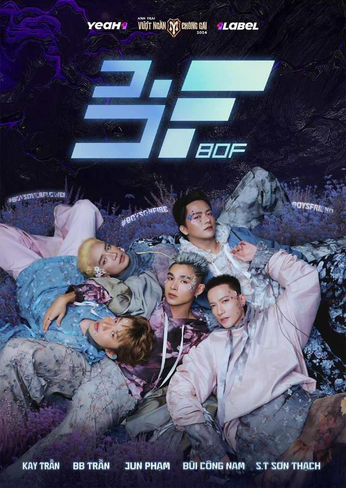
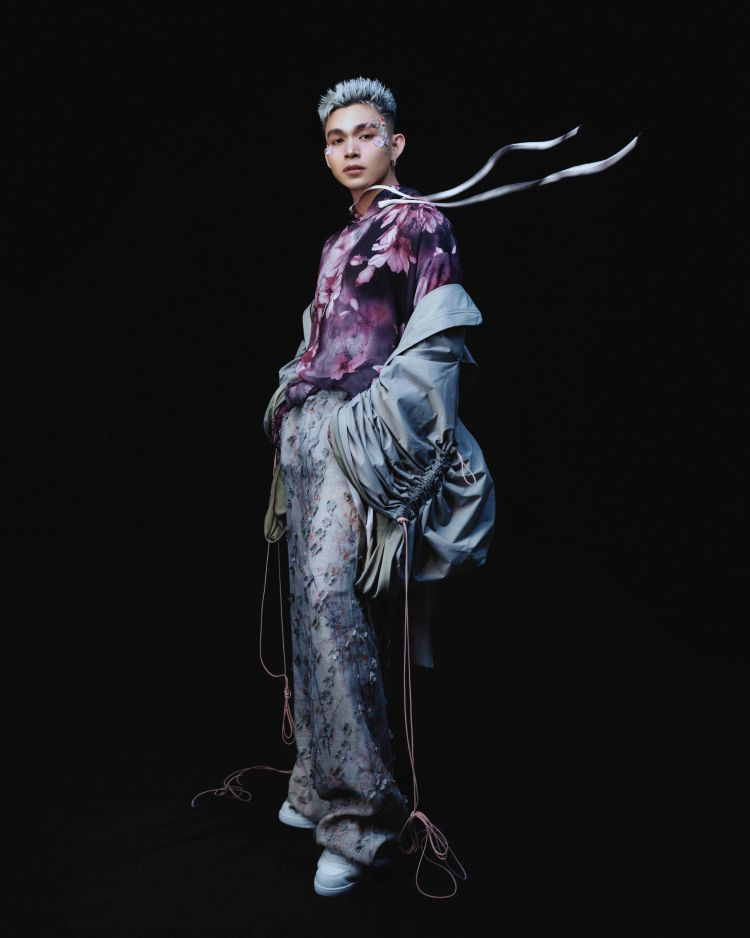
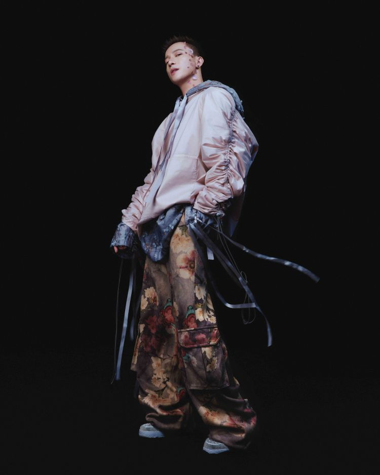
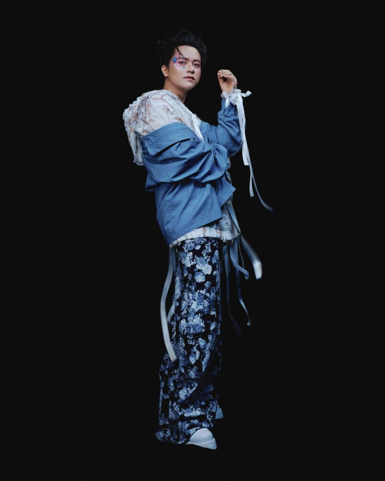
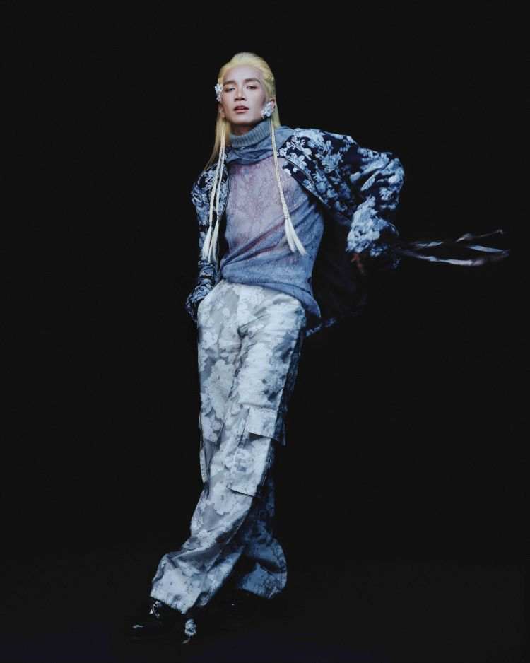

B.O.F: The boyband from "Call Me By Fire" officially debuted!
Posted : December 6, 2024"Call Me By Fire" continues to prove its appeal as one of the most sensational TV shows of 2024. Even though it ended nearly two months ago, the show remains a hot topic among audiences and the media.
Recently, fans' rumors and anticipation were finally addressed as the show announced the formation of the boy group B.O.F (Boys on Fire), featuring five standout members: Jun Pham, S.T Son Thach, Bui Cong Nam, Kay Tran, and BB Tran.
The Journey from TV Show to Professional Boyband
The B.O.F group is seen as the culmination of the artists' journey to showcase and affirm their inner strength throughout the show. The name Boys on Fire evokes the image of passionate young men who give their all on stage. At the same time, the group embodies charm (Boys Over Flower) and friendliness (Boys Friend), ready to spread positive energy to their fans.
The group's first poster features a modern and dreamy floral style, leaving a strong impression on viewers.
Outstanding members with diverse talents
Jun Pham - Leader & Lead Vocal & Lead Dancer
Jun Pham is the first piece of BOF, and also takes on the role of leader of the group. During his journey to participate in Call Me By Fire, the male singer born in 1989 has partly proven that in addition to his handsome appearance, he also has advantages in singing, dancing ability and creativity. With the experience gained from his previous time working in the 365 group and his warmth, Jun Pham will create a connection between the members when BOF is officially launched.
ST Son Thach – Main Dancer & Visual

Along with Jun Pham, ST Son Thach is expected to bring many surprises when joining BOF. The male singer born in 1990 impressed with his handsome appearance and multi-talented art. It can be seen that in his career, ST Son Thach is not afraid to renew himself in many roles, from singer to actor. Experience in the arts since childhood along with the spirit of not being afraid to challenge himself will be the "key" to help the male singer create special things when taking on the position of Main Dancer & Visual of the group BOF.
Bui Cong Nam – Main Vocal & Producer
Bui Cong Nam was born in 1994, one of the two youngest members of BOF. However, when it comes to versatility, he is by no means behind. That has been proven during his participation in Call Me By Fire, helping Bui Cong Nam gain more loving audiences. From that stepping stone, joining BOF in the position of Main Vocal & Producer will allow him to fully embrace his passion for music alongside like-minded individuals.
Kay Tran - Main Rapper & Main Dancer & Producer

Returning to Call Me By Fire after a quiet period, Kay Tran "captured the hearts" of the audience not only because of his handsome face but also because of his versatility. Beyond showcasing his vocal talent in performances, the 1994-born artist also demonstrated his skills in rapping, music production, and especially impressed audiences with his captivating dance moves. Trusted to be the Main Rapper & Main Dancer & Producer, Kay Tran said he couldn't help but be excited to become a member of BOF.
BB Tran - Lead Dancer
Starting out as an actor, BB Tran has shown his versatility in his journey to participate in Call Me By Fire. That is why after this music show ended, the actor born in 1990 was offered by the producer to become a member of BOF in the position of Lead Dancer. Commented by other "talents" as a persistent, hard-working person in the profession as well as highly creative, BB Tran is considered a necessary piece to create many surprises for BOF in the future.
Get ready to explode with big projects
Currently, BOF members are busy preparing for the special concert of the show Call Me By Fire on December 14 at Vinhomes Ocean Park 3 (Hanoi). After that, the group will start working on a new music project, promising to bring many surprises to the audience.
With the unique combination of five talented artists and the memorable journey from the show, BOF is expected to become a prominent boyband of Vpop in the near future.
For more information in the future, check out the Offical Facebook Fanpage of BOF: B.O.F